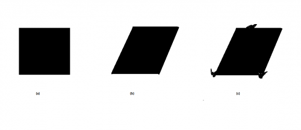
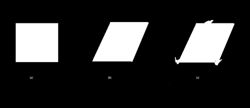
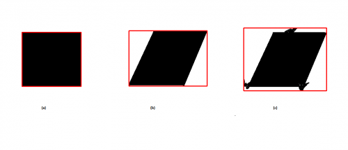
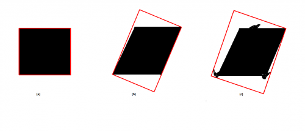
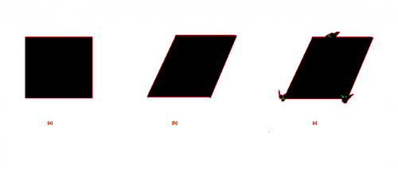
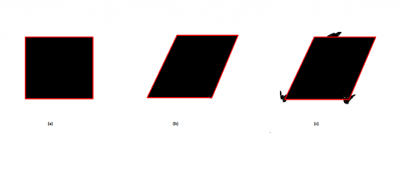

Бинарный объект
Бинарный объект – это объект, созданный человеком, и находящийся в поле зрения камеры. К таким объектам относятся дорожные знаки, автомобильные номера, баркоды и т.п. Часто эти объект имеют контур, по которому они достаточно хорошо детектируются. Однако возникают ситуации, когда объекты серьезно наклонены к оси камеры в нескольких плоскостях, а при этом на них накладывается шум:

Здесь: (а) исходный объект, (б) искаженный объект в результате поворота к камере, (в) зашумленный объект
Для правильного распознавания объекта необходимо провести перспективное преобразование. Но для этого необходимо получить 4 точки бинарного объекта.
Цель данной публикации: определить 4 точки в зашумленном объекте изначальной прямоугольной формы.
Доступные функции OpenCV для детектирования 4-х точек объекта
Здесь и далее будет использоваться Си интерфейс функций. Если зайдем в документацию по структурному анализа, то увидим, что функций, подходящих для работы с полученным контуром для получения нужных нам точек не так уж много.
На простых примерах посмотрим, как это работает. Сначала заготовка с бинаризацией изображения:
#include "opencv2/core/core_c.h"
#include "opencv2/imgproc/imgproc_c.h"
#include "opencv2/highgui/highgui_c.h"
int main( int argc, char** argv )
{
IplImage *image = cvLoadImage( "test.png" ); // 24-битное изображений
IplImage *gray = cvCreateImage( cvGetSize( image ), 8, 1 ); // Пустое 8-битное изображение
cvCvtColor( image, gray, CV_BGR2GRAY ); // Перевод в градации серого
cvThreshold( gray, gray, 128, 255, CV_THRESH_BINARY_INV ); // Бинаризация
cvSaveImage( "binary.png", gray );
cvReleaseImage( &image );
cvReleaseImage( &gray );
return 0;
}
Результатом будет инвертированное изображение:

Далее сделаем нахождение контуров и минимального ограничивающего прямоугольника.
boundingRect
Для этого после бинаризации добавим следующий код:
CvMemStorage* storage = cvCreateMemStorage(0);
CvSeq* contours = 0;
cvFindContours( gray, storage, &contours, sizeof(CvContour),
CV_RETR_TREE, CV_CHAIN_APPROX_NONE, cvPoint(0,0) ); // Поиск контуров
for( CvSeq* c=contours; c!=NULL; c=c->h_next)
{
CvRect Rect = cvBoundingRect( c ); // Поиск ограничивающего прямоугольника
if ( Rect.width < 50 ) continue; // Маленькие контуры меньше 50 пикселей не нужны
cvRectangle( image, cvPoint( Rect.x, Rect.y ), cvPoint( Rect.x + Rect.width, Rect.y + Rect.height ), CV_RGB(255,0,0), 2 );
}
cvReleaseMemStorage( &storage);
cvSaveImage( "image24.png", image );
Результатом программы будет:

Видно, что детектировались нужные объекты. Но для (a) точки все правильные, для (b) правильные только 2 точки, а для (c) не найдено ни одной точки.
minAreaRect
Для получения ограничивающего Box модифицируем следующий пример, добавляя в цикл:
CvBox2D b = cvMinAreaRect2( c );
DrawRotatedRect( image, b, CV_RGB(255,0,0), 2 );
При этом, определив ранее функцию вывода CvBox2D на экран:
void DrawRotatedRect( IplImage * iplSrc,CvBox2D rect,CvScalar color, int thickness, int line_type = 8, int shift = 0 )
{
CvPoint2D32f boxPoints[4];
cvBoxPoints(rect, boxPoints);
cvLine(iplSrc,cvPoint((int)boxPoints[0].x, (int)boxPoints[0].y),cvPoint((int)boxPoints[1].x, (int)boxPoints[1].y),color,thickness,line_type,shift);
cvLine(iplSrc,cvPoint((int)boxPoints[1].x, (int)boxPoints[1].y),cvPoint((int)boxPoints[2].x, (int)boxPoints[2].y),color,thickness,line_type,shift);
cvLine(iplSrc,cvPoint((int)boxPoints[2].x, (int)boxPoints[2].y),cvPoint((int)boxPoints[3].x, (int)boxPoints[3].y),color,thickness,line_type,shift);
cvLine(iplSrc,cvPoint((int)boxPoints[3].x, (int)boxPoints[3].y),cvPoint((int)boxPoints[0].x, (int)boxPoints[0].y),color,thickness,line_type,shift);
}
Результат:

Как видим, опят результат неудовлетворительный.
approxPoly
Вместо цикла в примере заменяем на код, а в findcontour – на CV_CHAIN_APPROX_SIMPLE:
cvApproxPoly( contours, sizeof(CvContour), storage, CV_POLY_APPROX_DP, 3, 1 );
cvDrawContours( image, contours, CV_RGB(255,0,0), CV_RGB(0,255,0),2, 1, CV_AA, cvPoint(0,0) );
Результат:

Здесь представлены аппроксимированные контуры, которые не дают информации о 4-х точках. Попробуем аппроксимировать еще, но результата нужного нам нет.
Алгоритм детектирования 4-х точек
Поэтому приходим к тому, что нужен собственный алгоритм для детектирования этих 4-х точек. Он очень прост и сводится к принципу RANSAC. Т.е. берутся 2 точки из контура, по ним строится линия, и определяется сколько точек близки к данной линии. Таким образом определяются 4 линии, а на их пересечении будет находиться искомая точка. Естественно его нужно немного модифицировать, поскольку стороны – четыре. Но в целом функция, которая получает на вход контур может быть выполнена так:
bool Find4Points( CvSeq* contour, CvPoint* Points, CvRect Rect )
{
CvPoint* v_points = new CvPoint[contour->total];
int step = (Rect.width/4);
int all_lines = 0;
LINE_* lines = new LINE_[contour->total/step];
CvSeqReader reader;
cvStartReadSeq( contour, &reader, -1 );
CvPoint p = { -1, -1 };
// Кандидаты на 4 линии
for(int i = 0; i < contour->total; i++ )
{
CV_READ_SEQ_ELEM( v_points[i], reader );
if ( i % step == 0 )
{
if ( p.x != -1 )
{
lines[all_lines] = MakeLine( cvPointTo32f( p ), cvPointTo32f( v_points[i] ) );
all_lines++;
}
p = v_points[i];
}
}
LINE_ lines4[4];
int all_lines4 = 0;
for( int j = 0; j < all_lines; j++ )
{
int k = 0;
for( int it = 0; it < all_lines4; it++ )
{
if ( lines[j].b == lines4[it].b && absf( lines[j].b1 - lines4[it].b1 ) < 0.1f &&
absf( lines[j].b2 - lines4[it].b2 ) < 2.0f )
{
k = 1;
break;
}
}
if ( k == 1 ) continue;
k = 0;
for(int i = 0; i < contour->total; i++ )
if ( PointInLine( lines[j], v_points[i] ) )
k++;
if ( k > contour->total / 8 )
{
lines4[all_lines4] = lines[j];
all_lines4++;
if ( all_lines4 == 4 ) break;
}
}//for( int j = 0; j < all_lines; j++ )
bool result = false;
if ( all_lines4 == 4 )
{
float x, y;
for( int i = 0; i < 4; i++ )
{
Intersection( lines4[i], lines4[(i+1)%4], x, y );
Points[i].x = int( x + 0.5f );
Points[i].y = int( y + 0.5f );
}
result = true;
}
delete [] v_points;
delete [] lines;
return result;
}
Для того, чтобы не перебирать все возможные точки берутся точки через шаг step и формируются только кандидаты из соседних точек. Кандидаты – это линии. Затем линии перебираются и первые 4, которые пересекают достаточное количество точек (if ( k > contour->total / 8 )) считаются линиями сторонами четырехугольника. После этого находятся вершины четырехугольника путем нахождения пересечений линий. В этой функции следующие элементы мной умышленно не приведены, но их легко переписать самому, это:
Эту функцию Find4Points можно вызвать так в том же цикле перебора контуров:
CvPoint p[4];
if ( Find4Points( c, p, Rect ) )
{
for( int i = 0; i < 4; i++ )
cvLine( image, p[i], p[(i+1)%4], CV_RGB(255,0,0), 2 );
}
Результат будет следующий:

Что и требовалось получить.
Замечу, что этот метод требует доработки, а здесь представлена только концепция.